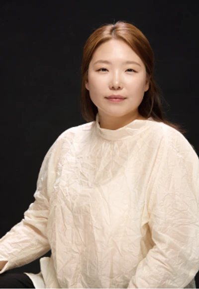
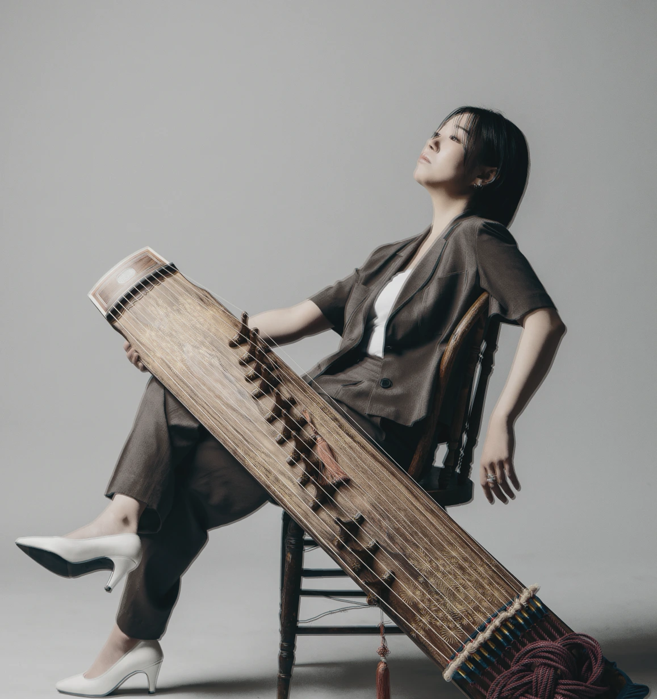
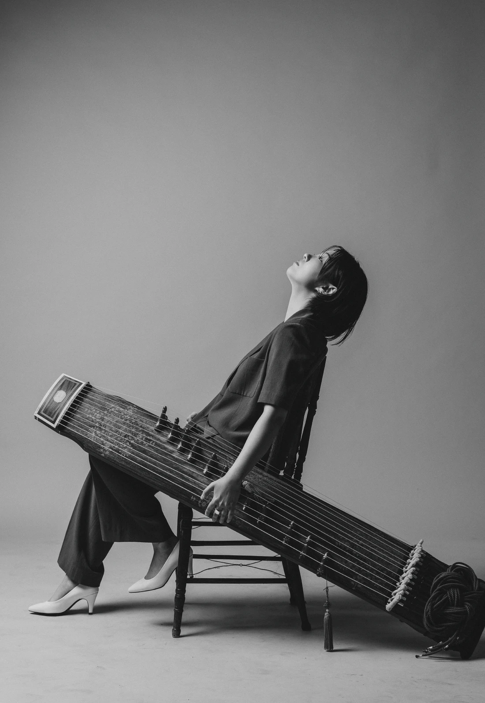
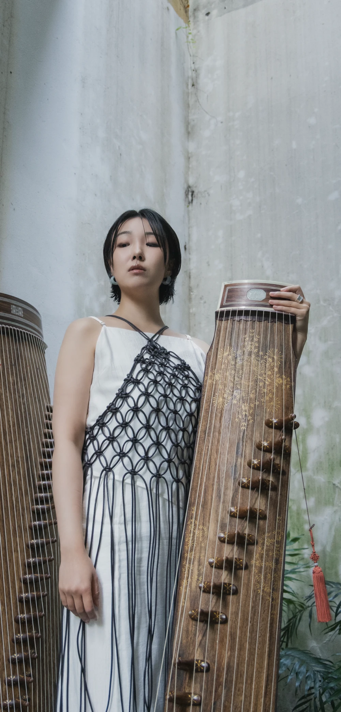
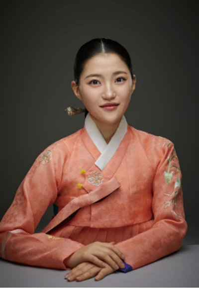

HOST
사회 서정민
- 프로덕션 安 대표
- 한국예술종합학교 전통예술원 겸임교수
- 한국국제문화교류진흥원 국제문화교류 컨설턴트단
김보경 25현 가야금 콘서트


그것은 틀에 박혔다
자유로워지기를 반복한다
GREETING
창작은 결국 자신이 가지고 있는 것들을
재조립 하는 것에 지나지 않다.
언젠가 들었던 그 말에 저는 공감과 갈망을 동시에 느꼈습니다. 내가 만든 창작물은 결국 내가 배워왔던 것과 좋아하는 것들의 집합체. 이것의 세계를 어떻게 깨부수고 넓힐 수 있을까? 라는 물음을 항상 던져오던 중 타인의 해석이 저에겐 새로운 세상으로 다가왔습니다.
나의 생각과 감정을 담아 음악을 연주하면 그걸 들은 이들은 각자의 방식대로 새로운 해석을 만들어냅니다. 같은 음악에서도 내가 의도하지 않았던 감정을 느끼고 내가 상상하지 않았던 장면 혹은 기억을 꺼내어 놓는 관객들을 보며 예술이 자유롭게 헤엄친다는 느낌을 받았습니다.
‘나’라는 틀에 갇힌 음악이 ‘너’를 만나며 자유로워진다.
오늘 여러분은 음악을 듣고 어떤 감정을 느끼셨나요? 혹은 어떤 장면이 떠오르셨나요? 저는 오늘 저의 생각과 감정을 꺼내어 여러분께 들려 드릴 테지만, 부디 그것에 갇히지 않고 그저 떠오르는 대로 자유롭게 감상해 주시길 바랍니다.
감사합니다.
THE MUSIC
여섯 곡으로 만나는 틀과 자유

GAYAGEUM
김보경 서정민 연지은 오선아 (가나다 순)

HOST

VOICE
ORIGINAL PAMPHLET
펼침면을 누르면 크게 볼 수 있습니다.
예매 오픈
예매하기2023
2021